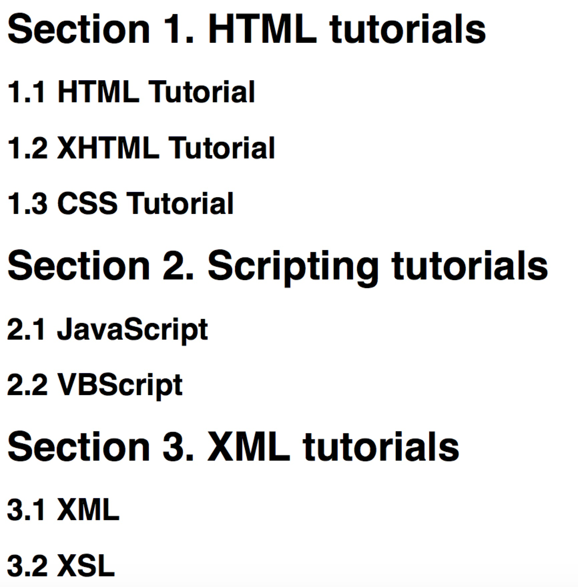

展示序号的另一种方法
在前端开发中，我们时常会碰到，需要展示序号的场景，对于现在的react，vue类框架,可以简单地把index写入，但是对于数据需要部分展示和隐藏带来的一些复杂逻辑，最近开发中发现了一种css的计数和展示序号的方法，那就是CSS counter-increment Property。
例子如下：
body {
counter-reset: log;
}
h1 {
counter-reset: subsection;
}
h1:before {
counter-increment: log;
content: "Section " counter(log) ". ";
}
h2:before {
counter-increment: subsection;
content: counter(log) "." counter(subsection) " ";
}
展示结果如下：

参数说明：
1、counter-reset: 这个属性要放在需要计数的对象的父对象上，放在当前对象上的计数会一直为1
2、counter-increment: 指示计数的对象是哪一个对象，和conter-reset对应
3、content: 这个代表计数的展示字符串，counter(target) 是计数器
总之，通过这种方式，可以简单实现页面元素计数，浏览器会自动处理显示隐藏相关计数的问题，完全不需要我们来操心。这种方式的不好，却是逻辑不便管理。
现在看来，css能做的事情也越来越多了，也给开发者提供了另一个选择。